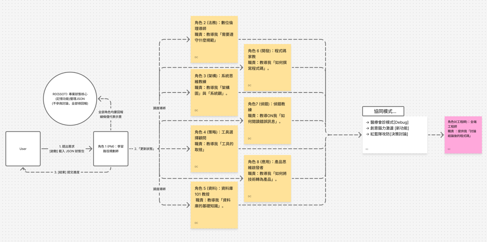

我的核心邏輯：AI 是助手，我是架構師
「Gemini 合作日誌」中所記錄的，表面上是一個開發者從 V1.0 到 V9.0 的全端專案建構史。但其核心，是筆者（沈廷翼）作為一個 AI 專案經理 (PM) 與架構師，如何從零開始，實踐一套完整的「人機協作」系統方法論。
本方法論的核心哲學是「人機協作，而非單靠 AI」。人類（PM）的角色是「架構師」，負責提出問題、定義規格、並做出最終決策。
因此，本方法論的第一個貢獻，即是**「設計」AI 助手 (Gemini Gem)**，使其成為一個可控、可預期、具備專業能力的協作夥伴。
結論：實踐的差異（執行摘要）
這套方法論與傳統瀑布式開發的根本差異，總結如下：
| 痛點 | 傳統瀑布式開發 (Waterfall) | 我的 AI PM 系統方法論 |
|---|---|---|
| 過度開發 | 試圖一次規劃 V1.0 到 V9.0 的所有功能與完美架構。 | PM 首先使用「決策原則 A」蒐集資料，然後在 Sprint 1 (V1.0) 只做「一個能動的頁面」，其核心目的是「驗證架構可行性（支柱 5 & 6）」。 |
| SPEC 亂開 | 開發 V3.0 到一半，又想加入 V8.0 的圖片上傳，導致架構混亂、時程爆炸。 | 建立「待辦清單 (Backlog)」。有新需求（例如 GA 數據分析），很好，PM 將其放入 Backlog，等當前 V9.0 衝刺完成後，再排入下一個 Sprint。絕不干擾當前工作。 |
我的核心流程：MVP 優先的「架構可行性驗證」
在所有方法論之上，是我的核心流程：「敏捷 (Agile)」。
但我實踐的敏捷，並非「功能導向」，而是「架構導向 (Architecture-First)」。在開發任何複雜功能前，我會優先使用「MVP (最小可行產品)」來驗證「所選框架 (Framework) 與架構 (Architecture) 的可行性」。
- 實踐案例 (V1.0)： 這個 MVP 的目的，是驗證「本地端 (VS Code) -> 版控 (Git) -> 雲端 (GitHub) -> 持續部署 (Railway)」這套「雲端 DevOps 架構（支柱 5 & 6）」是否可行。
- 實踐案例 (V2.0)： 這個 MVP 的目的，是驗證「Zeabur + n8n + PostgreSQL」這套「後端架構（支柱 1）」是否可行。
- 結論： 可行性驗證失敗。遭遇嚴重 Bug。
- 實踐案例 (V4.0)： 由於 V2.0 架構的局限性，這個 MVP 的目的，是驗證「Supabase (BaaS)」這個「新架構（支柱 1）」是否能成為「可行」的替代方案。
這個「驗證 -> 決策（或 Pivot）-> 迭代」的流程，是我用來駕馭「三大層次」與「六大支柱」的引擎。
層次一：協作框架 (我如何「設計」AI)
為實現高效的人機協作，第一步是為 AI 建立一個「作業系統」，將其從一個「問了才答」的聊天機器人，轉變為一個「多角色、有記憶」的專業團隊。
此為筆者設計的「人機協作」系統架構 (Gemini Gem)。
角色 A：R0 專案狀態核心 (Project State Kernel)
- [一般人說明] 這相當於為 AI 助手安裝了「專案記憶體」與「專案秘書」。
- [設計] PM 要求 AI 必須在內部維護一個「單一事實來源 (SSOT)」，用結構化格式（如 JSON）記住專案的完整狀態，包含 `project_spec` (規格)、`data_schema` (資料庫綱要)、`code_blocks` (關鍵程式碼) 等。
- [協作成果] 這將 AI 從「無狀態」轉變為「有狀態」。AI 能「記住」專案在 V3.0 決定的資料庫結構，並在 PM 於 V6.0 開發新功能時，主動調用該記憶，實現了跨時間的「專案連續性」。
角色 B：R-N 角色導向的任務委派 (Role-Oriented Delegation)
- [一般人說明] 拒絕讓 AI「通才」回答，而是將其設計為一個「隨需調用的專家團隊」。
- [設計] PM 不直接對 AI 下令，而是將任務「委派」給為 AI 設計的「虛擬專家角色」。
- [協作成果]
- `R4 (架構導師)` (技術顧問)： 當 PM 在 V4.0 評估是否從 n8n 遷移到 Supabase 時，呼叫 R4 來提供架構決策分析。
- `R7 (偵錯專家)` (鑑識科學家)： 當專案在 V3.0 遭遇 `forEach` 錯誤時，呼叫 R7 來執行「RCA 根本原因分析」SOP。
- `R2 (資安官)` (資安稽核員)： 當專案在 V2.1 處理 Notion API Key 時，呼叫 R2 來確保「內建倫理與安全」。
- `數據分析師` (數據科學家)： 當專案需要導入 GA/GTM 時，呼叫此角色來提供數據策略。
[證據] AI 助手 (Gemini Gem) 的原始設計圖
這份「程式管理 sheet」是用來管理 AI 角色的「原始碼」與「設計藍圖」，包含了 `R0` 核心、`R4` 導師、`R7` 偵錯等角色的實際提示詞 (Prompts)。
» 查看「程式管理總表」層次二：決策原則 (我如何「驅動」AI 思考)
有了這個「專家團隊」，PM（人類）便可運用預先定義的「決策原則」，來驅動 AI 進行高效率的思考與分析。
原則 A：【策略層】數據優先 (Data-First Strategy)
- [定義] 這是在專案「啟動前」的 PM 核心原則。必須蒐集市場、競品、使用者研究等「**正規資料**」，來決定「**我們該做什麼 (What to build)**」。
- [協作成果] PM 驅動 `R4 (AI 導師)` 協助進行「競品分析」，例如比較 Supabase, AppWrite, PocketBase (V7.0) 的優劣。AI 提供的「正規資料」協助 PM 做出「選擇 Supabase」的最終架構決策。
原則 B：【營運層】數據分析 (Data-Driven Analytics)
- [定義] 這是在專案「**上線後**」的 PM 核心原則。必須蒐集「**使用者行為數據**」，來決定「**我們該優化什麼 (What to optimize)**」。
- [協作成果 (GA/GTM)]
- PM 決策：「我必須監測有人進來網站」，這啟動了「數據分析」原則。
- AI (數據分析師)： 提供了「安裝 GA/GTM」的技術路徑。
- PM 的人類洞察： PM 立刻提出質疑：「但我換地方換 wifi 不就會 ip 變了?」
- AI (數據分析師)： 根據 PM 的質疑，提供了「多層次過濾」的進階解決方案（IP 篩選、GTM 預覽模式、瀏覽器外掛）。
原則 C：【備援】費米推理 (Fermi Estimation)
- [定義] 當「原則 A」與「原則 B」的數據都不可被獲取時（例如預測未來、估算全新市場），PM 會要求 AI 切換至「費米推理模式」，將問題拆解為「邏輯估算」。
- [協作成果 (AI 影片工作流)] 在評估「n8n 自動化 AI 影片工作流」的潛在價值時，PM 驅動 AI 將問題拆解為 `(創作者數) x (採用率) x (願付價格)` 來進行邏輯估算。
層次三：六大執行支柱 (協同 AI 實作)
在「決策」做出後，便進入「敏捷實作」階段。這六大支柱是在所有專案中都嚴格遵守的工程紀律：
支柱一：架構選型與優化
- [人機協作] PM（人類）提出 V4.0 升級需求，`R4 (AI 導師)` 分析 Supabase 的優勢（這也是「原則 A」的實踐）。PM（人類）做出「遷移」的最終決C策。
- [更多案例 V2.0] PM 發現 Zeabur 平台的 Bug，`R4 (AI 導師)` 協助分析並確認平台問題，PM 決策遷移至 Railway 平台。
支柱二：資料庫結構為核 (Database-Centric Design)
- [一般人說明] 這與「策略數據」不同。這是指在「決定蓋什麼」之後，必須先設計好「房子的鋼筋骨架 (資料庫結構)」，才能開始蓋牆（寫功能）。
- [人機協作] PM（人類）設計 `products` 與 `customer_contacts` (V6.1) 的業務邏輯，AI 助手協助生成「關聯式資料表」的 SQL 語法與「外鍵」設定。
- [更多案例 V5.6] PM 提出「需要庫存」的需求，AI 助手協助進行「資料庫綱要演進 (Schema Evolution)」，在 `products` 表上新增了 `quantity` 欄位。
支柱三：系統化偵錯 (Systematic Debugging)
- [人機協作] PM（人類）發現 V3.0 「前端讀取失敗」的現象，`R7 (AI 偵錯)` 提供「隔離變因法」SOP。PM 執行 SOP，定位到錯誤在 n8n，`R7 (AI 偵錯)` 接著分析並找出 `First Incoming Item` 的根本原因。
- [更多案例 V5.3] PM 遭遇 `products_pkey` 錯誤，`R7 (AI 偵錯)` 診斷為「資料庫主鍵 (Primary Key) 設錯」，RCA 指出是 `name` 被誤設為 PKey，而非 `id`。
支柱四：內建倫理與安全 (Ethics & Security by Design)
- [人機協作] PM（人類）提出「訪客不能寫入資料」的嚴格要求。`R2 (AI 安全官)` 提供了 Supabase RLS (Row Level Security) 的技術實現方案 (V5.8/V6.1)。
- [更多案例 V2.1] PM 準備串接 Notion API，`R2 (AI 安全官)` 立刻發出「API Key 安全儲存」警告，PM 決策將 Key 儲存在 n8n 的 Credential 中，絕不暴露在前端程式碼裡。
支柱五：本地端開發流程 (Local Development Process)
- [人機協作] PM（人類）在 VS Code 中編寫程式碼，並執行 `Git` 版控。`R0 (AI 核心)` 則「記住」相關的 `code_blocks`。
- [更多案例 V1.0] PM 遭遇 `Git command not found`，`R7 (AI 偵錯)` 診斷為「環境變數 (PATH) 錯誤」，並提供了修復指南。
支柱六：雲端架構與服務串接 (Cloud Architecture & Integration)
- [人機協作] PM（人類）提出 V7.0「履歷」和「商品」必須分離的「架構解耦」策略。`R4 (AI 導師)` 確認這是「微服務」的最佳實踐，並提供 Railway 上「兩個獨立服務」的部署方案。
- [更多案例 V3.0] PM 要實現「跨網站串接」，AI 助手提供了前端 `fetch()` 程式碼，以「API 呼叫」的方式，讓「履歷網站 (前端)」跨站存取「商品服務 (後端)」的資料庫。
總結：人機協作的敏捷實踐
這套完整的「（MVP 架構可行性）敏捷流程 + 人機協作框架 + 三大決策原則 + 六大執行支柱」方法論，才是一個 AI PM 能從零到一，處理任何複雜專案的真正核心。